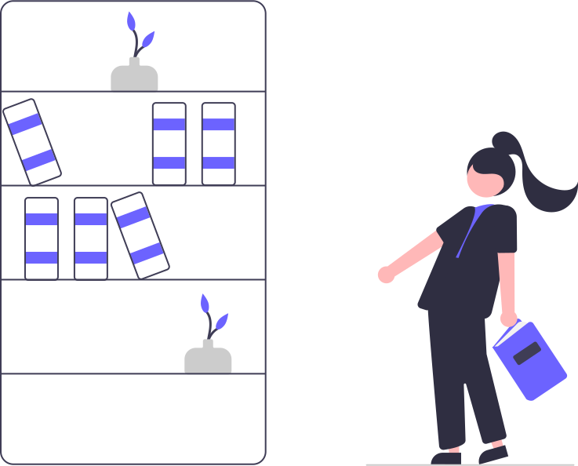

Projects
Merging technical expertise with creativity, I have delivered
impactful solutions that streamline operations, enhance user
experience, and drive innovation. Here are some of my highlights:

Pustak – Book Management Platform
Developed and deployed a Django-powered web application for managing and exchanging books, quotes, and user interactions. Built a responsive Angular frontend with book catalogs, quote displays, and user profiles, using two-way data binding, custom directives, RxJS for async data handling, and NgRx for state management. Implemented robust features including user authentication, admin dashboards, and system configurations, supported by AWS and Firebase for storage and backend operations. Utilized BeautifulSoup for web scraping to deliver daily quotes and book updates, and Swagger for API documentation and testing.

SpicyDen – Restaurant App
Developed SpicyDen, a restaurant application using AngularJS, utilizing Angular's code scaffolding for efficient component generation and seamless service management. Implemented testing workflows with Karma to ensure code reliability and maintainability throughout the development process.
Cyberbullying Detection via Multi-Stage NLP Pipeline
Designed a multi-model NLP pipeline for robust cyberbullying detection, combining a hate speech classifier (HateBERT) with a BERT model fine-tuned on cyberbullying data, achieving 95% recall through weighted ensemble voting and enriched contextual understanding of abusive language.
Optimized Deep Learning Pipeline for Pneumothorax Detection
Engineered an automated image preprocessing pipeline for 12,000+ chest X-ray images, leveraging PyTorch, PIL, and torchvision to standardize dimensions, normalize pixel intensities, and apply CLAHE-based contrast enhancement, ensuring high-quality inputs for deep learning models.
NYC Taxi Data Pipeline: Scalable ML & Real-Time Insights
Spearheaded development of a distributed data processing pipeline using Apache Spark on AWS EMR, accelerating processing of 10M+ NYC Taxi Trip Records by 70%. Developed and deployed scalable ML-integrated APIs using FastAPI, Docker, and AWS EKS, achieving 93.8% model accuracy and 60% faster response times. Automated ML deployment workflows with GitHub Actions and AWS Lambda, reducing deployment cycles by 50%. Enhanced system observability through Grafana dashboards and implemented secure OAuth2-based authentication protocols.
Sector-Wise Stock Performance Analysis Using Advanced Visualization
Conducted in-depth analysis of stock performance across Technology, Finance, and Healthcare sectors using R for statistical computation and D3.js for dynamic, interactive visualizations. Designed a responsive dashboard with HTML and CSS, highlighting key insights such as volatility trends, seasonal patterns, and market sentiment impacts.

Predicting Spotify Track Popularity
Analyzed 30K songs using Python to uncover significant audio features and their correlations, providing insights into factors influencing track popularity in the streaming era. Engineered and benchmarked ML pipelines with Ridge, Elastic Net, CatBoost, and LightGBM, complemented by deep learning architectures.
Taskify: A Task Management System
Developed a task management application using Spring Boot for building the backend, with features such as user authentication, task creation, and status tracking. Utilized Spring Security for secure user login and JWT (JSON Web Tokens) for stateless authentication. Implemented unit and integration tests using JUnit and Mockito, ensuring reliability and functionality of key features. Configured Spring Boot Test for end-to-end testing of the RESTful API, improving test coverage and minimizing bugs. Utilized PostgreSQL with Spring Data JPA for efficient querying and handling of complex data relationships.
Borough Classification in NYC Using Vehicle Collision Data
Built a borough classification model using 2M+ NYC vehicle collision records, achieving 98.2% accuracy and 96% F1-score — without using explicit geographic features (lat/long). Engineered predictive features from metadata including timestamp, vehicle type, accident factors, and severity codes. Benchmarked multiple models (XGBoost, Random Forest, Logistic Regression) to optimize predictive performance. Identified borough-specific traffic risk patterns, revealing distinct trends in accident severity, peak crash times, and human vs environmental causes. Validated results using stratified K-fold cross-validation and hyperparameter tuning; visualized findings with Matplotlib and Seaborn.

Weather Forecasting with GRU
Built a real-time weather data scraper to collect hourly forecasts from multiple sources, storing structured time-series weather data for predictive modeling. Trained a Gated Recurrent Unit (GRU)-based neural network for 24-hour weather forecasting, achieving 94% accuracy using historical Delhi weather data (1997–2016). Preprocessed data for deep learning models, normalizing inputs between -1 to 1 and using RMSprop optimizer to enhance learning stability across training epochs.